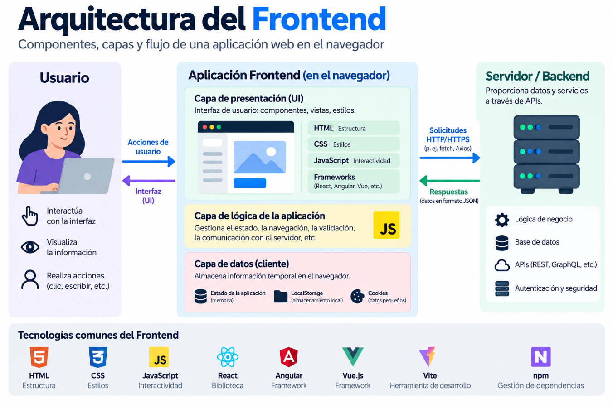
1. Web Technology
1.1. The World Wide Web
The Internet and the Web are not the same thing. Email, IRC, Telnet and FTP existed before the Web.
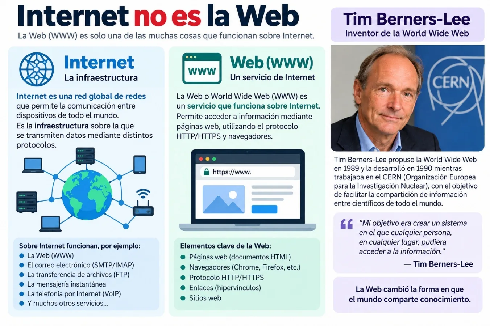
In 1989, Tim Berners-Lee worked at CERN, where scientists needed to share documents across different computers. He proposed linking documents through hypertext, a term coined by Ted Nelson in 1965.
By late 1990, the first server and browser—WorldWideWeb, later renamed Nexus—were running. The project combined HTML for structuring documents, URLs for locating resources and HTTP for requesting and receiving them.
Mosaic popularised graphical browsing in 1993. CERN released the Web software into the public domain, Netscape Navigator appeared in 1994 and Internet Explorer in 1995. Competition between browsers became known as the “browser wars”.
Further study: documentary on the browser wars and the early Web: https://youtu.be/zZmhnIa97NU
1.2. Internet and Web: related concepts
The Internet is the network of networks connecting devices. The World Wide Web is one service running on it. A browser displays and operates web pages; a search engine helps users find them.
Explore CERN's first website: https://info.cern.ch/
1.3. Client–server architecture
A web application is divided into a client/frontend, which presents the interface and sends requests, and a server/backend, which applies business logic, queries databases and returns responses.
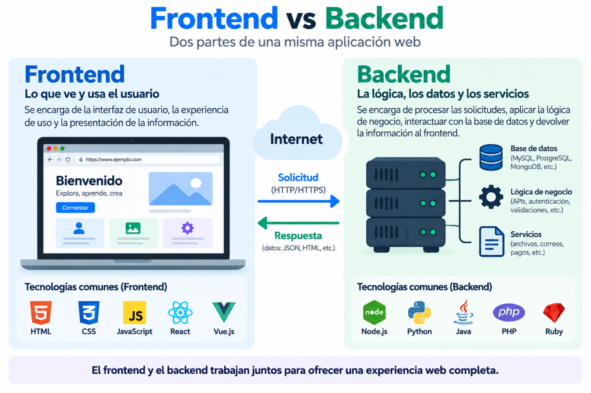
| Layer | Responsibility |
|---|---|
| Client/frontend | Displays forms, reacts to interaction and presents results. |
| Server/backend | Validates operations, checks permissions and processes requests. |
| Database | Stores persistent application data. |
A page rarely arrives as one object: the browser may first download HTML, then CSS, JavaScript, images and data, and combine these resources into the rendered result.
2. The Web Browser
A browser is a Web client or user agent. It requests resources, parses HTML, applies CSS, executes JavaScript, renders graphics, supports interaction and exposes APIs and storage mechanisms.
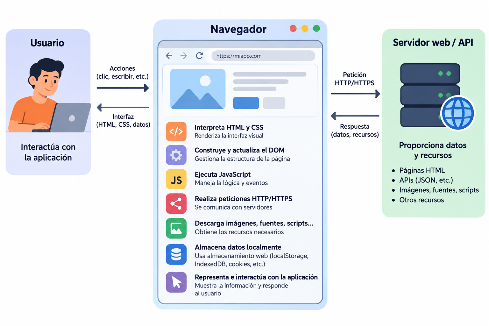
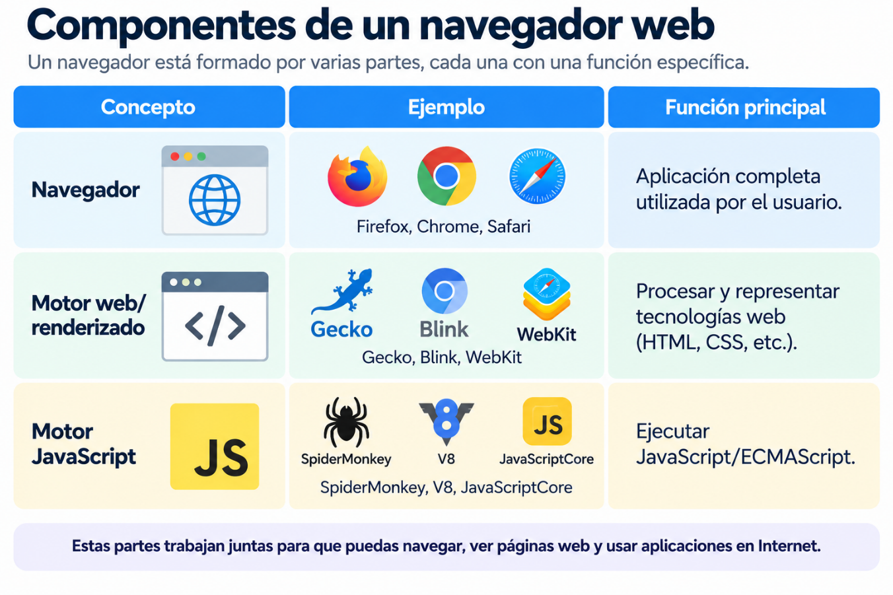
URL
A URL identifies a resource and may contain a scheme, host, port, path, query and fragment.
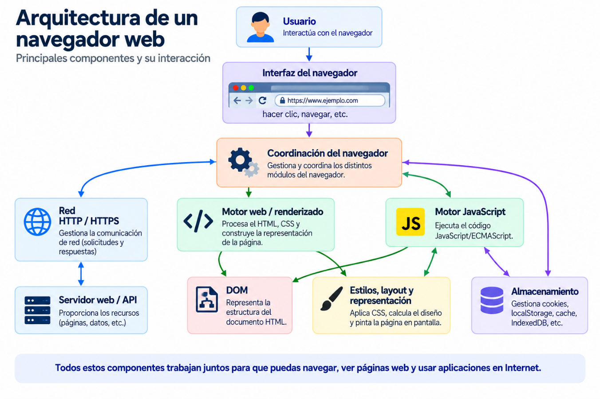 |
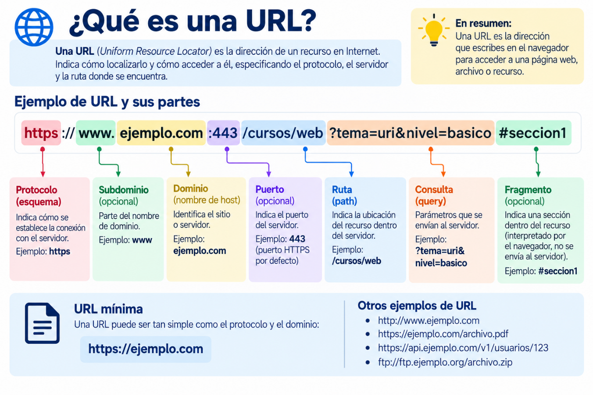
2.1. Rendering and JavaScript engines
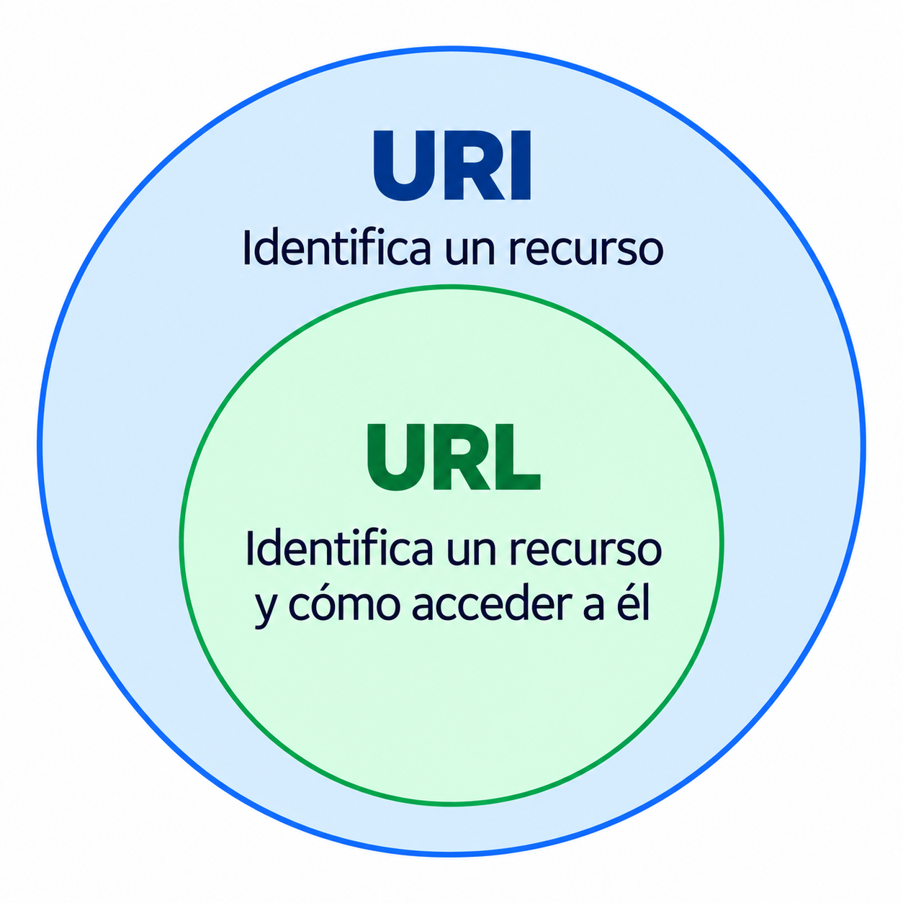
A browser is not the same as its engines. Chromium uses Blink for rendering and V8 for JavaScript/WebAssembly. Firefox uses Gecko and SpiderMonkey. Safari uses WebKit and JavaScriptCore.
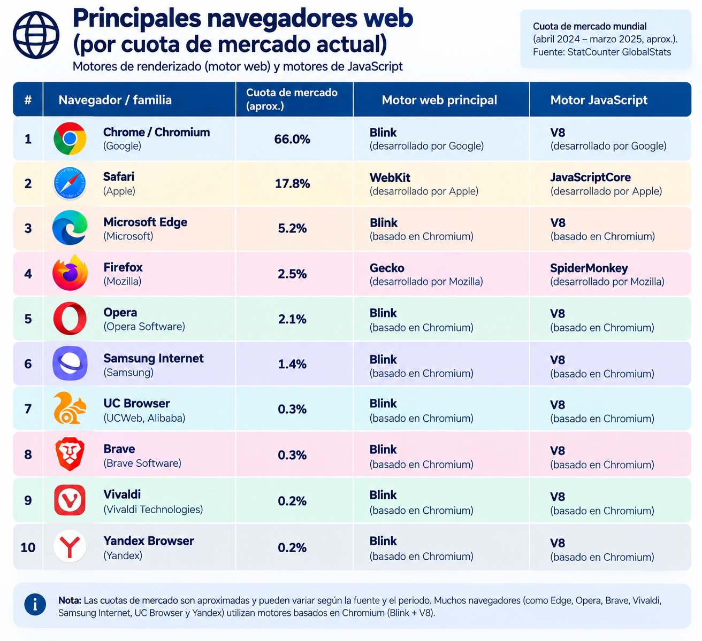
Chrome ≠ Blink ≠ V8
Chrome application/browser
Blink web rendering engine
V8 JavaScript enginePractice: choose browsers that provide real engine diversity. Chromium/Blink plus Firefox/Gecko is more diverse than two brands based on Chromium.
2.2. The DOM
The DOM (Document Object Model) is the browser's in-memory object representation of a document. It connects the page to scripts and can change while the application runs; it is not simply the original HTML source.
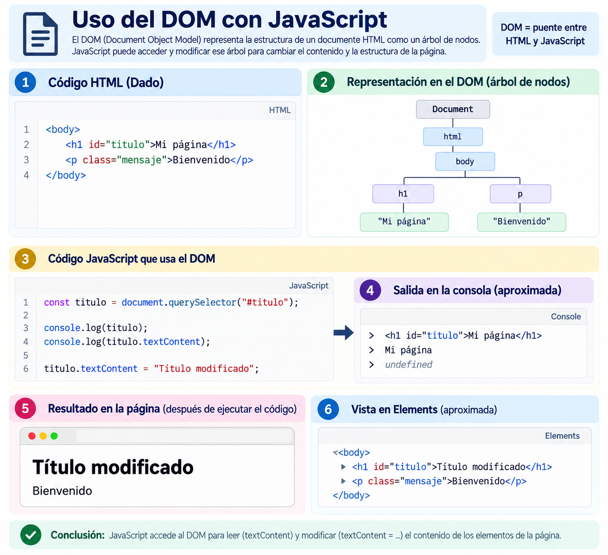
The DOM also supports events and many APIs connecting JavaScript with documents.
Activity: use DevTools Console to change an element's textContent, reload the page and explain why the temporary DOM edit did not alter the HTML file.
2.3. Cross-browser compatibility
Web standards are shared, but browser implementations evolve independently. A feature may arrive at different times or require fixes. Use standard technology, consult compatibility tables, test more than one engine and provide alternatives when necessary.
Chromium/Blink
Firefox/Gecko
Safari/WebKit, when availableActivity: run CSS.supports("display", "grid") in two browsers and record versions and results. Declared support does not replace testing the real layout.
3. HTTP Protocol
A protocol is a set of rules that lets systems communicate compatibly. HTTP means Hypertext Transfer Protocol and defines message exchange between web clients and servers.
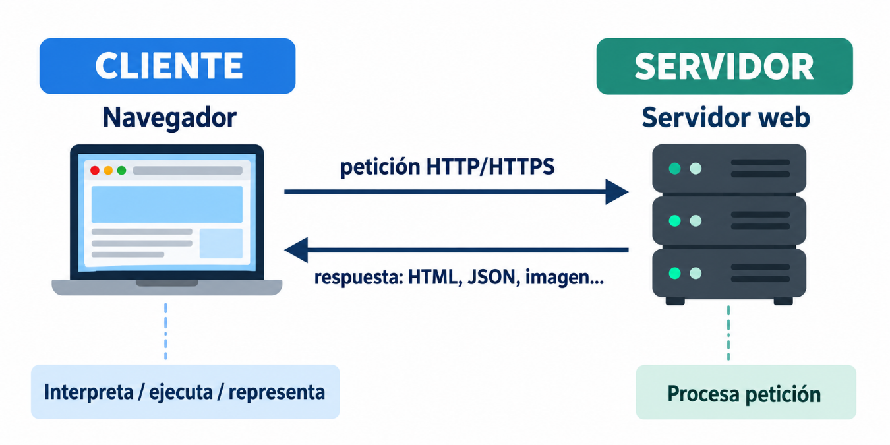
The basic cycle consists of a client request and a server response. Responses may contain HTML, CSS, JavaScript, images or data.
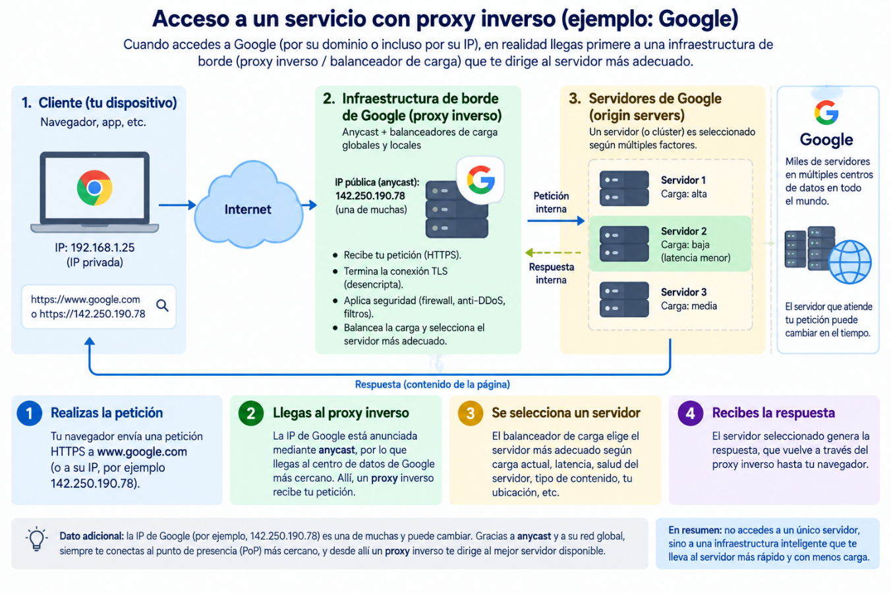
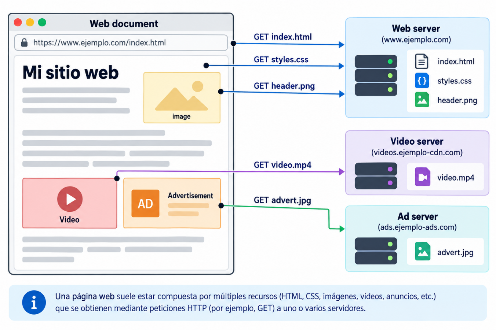
3.1. HTTPS handshake
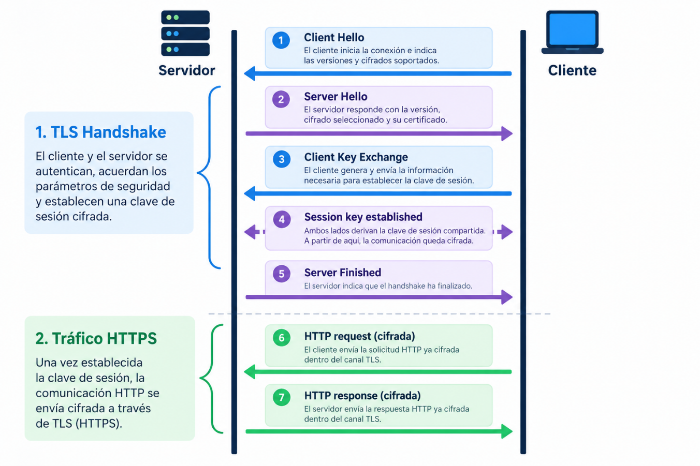
HTTP defines the messages; HTTPS protects their exchange with TLS.
3.2. HTTP request
A request is the message a client sends to ask the server to perform an operation on a resource.
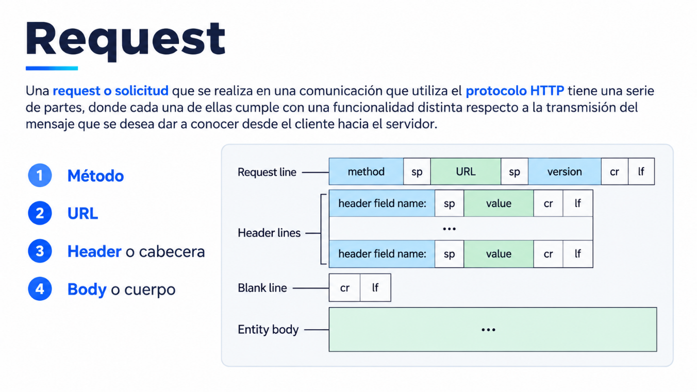
| Element | Purpose |
|---|---|
| Method | States the requested operation. |
| URL | Identifies the resource or endpoint. |
| Headers | Carry request metadata. |
| Body | Optionally carries submitted data. |
Example request
POST /students HTTP/1.1
Host: example.com
Content-Type: application/json
{"name": "Ana", "age": 16}3.3. HTTP response
The response contains a status code, headers and, when appropriate, a body with requested data or result information.
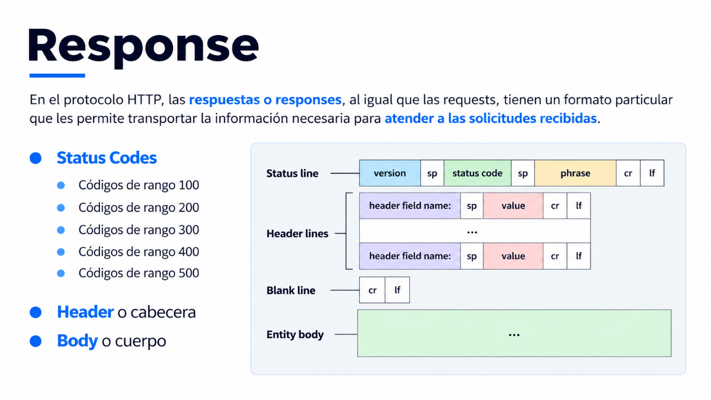
HTTP/1.1 200 OK
Content-Type: application/json
{"id": 25, "name": "Ana", "age": 16}3.4. Main HTTP methods
| Method | Typical operation | Example |
|---|---|---|
| GET | Read information | List all students. |
| POST | Create/process | Register a student. |
| PUT | Replace a complete resource | Replace all student data. |
| PATCH | Modify part of a resource | Change only the age. |
| DELETE | Delete a resource | Remove a student. |
The CRUD mapping is a design convention, not a universal equivalence: POST requests processing, and PUT may also create a target resource.
4. HTTP Headers and Message Structure
Headers are name: value fields carrying metadata about format, authentication, language, caching and cookies. The main resource normally appears in the body.
HTTP/1.1 request example
GET /api/students/42 HTTP/1.1
Host: example.com
Accept: application/json
Authorization: Bearer example-token
User-Agent: ClassroomClient/1.0A blank line separates headers from the optional body. Content-Length counts bytes, not characters; libraries should normally calculate it.
4.1. Request headers
| Header | Purpose | Example |
|---|---|---|
| Host | Target domain and port | Host: example.com |
| Accept | Acceptable response types | application/json |
| Accept-Language | Language preferences | en |
| Authorization | Credentials or token | Bearer … |
| Cookie | Cookies sent to the server | session=abc123 |
| User-Agent | Declared client software | ClassroomClient/1.0 |
| If-None-Match | Conditional request validator | "v15" |
| Origin | Origin initiating certain requests | https://classroom.example |
A web origin is defined by scheme, host and port; it is not an IP address.
4.2. Response and content headers
| Header | Purpose |
|---|---|
| Content-Type | Type of body |
| Content-Length | Body length in bytes |
| Location | Redirect or created-resource destination |
| Cache-Control | Cache rules |
| ETag | Representation validator |
| Set-Cookie | Requests cookie storage |
| Content-Encoding | Applied encoding/compression |
| WWW-Authenticate | Authentication challenge |
| Vary | Headers that distinguish cached variants |
4.3. HTTP status codes
Each response has a three-digit status code. 1xx is informational, 2xx success, 3xx redirection or further action, 4xx a request/client error and 5xx a server error.
| Family | Meaning | Examples |
|---|---|---|
| 1xx | Provisional information | 100 Continue |
| 2xx | Successful operation | 200 OK; 201 Created |
| 3xx | Redirection/revalidation | 301; 304 |
| 4xx | Request-related error | 400; 404 |
| 5xx | Server error | 500 |
4.4. Cache management
A web cache stores HTTP responses for reuse, reducing downloads, latency and server work. Browser caches are private; proxies and CDNs may be shared. Every resource has its own policy.
A fresh response can normally be reused directly. A stale response may be revalidated with an ETag and If-None-Match; a 304 response tells the client to reuse its stored body.
| Cache-Control directive | Meaning |
|---|---|
| max-age=3600 | Fresh for one hour |
| no-cache | May be stored but must be revalidated before reuse |
| no-store | Must not be stored |
| private | Must not be stored in shared caches |
| public | Allows shared storage under applicable rules |
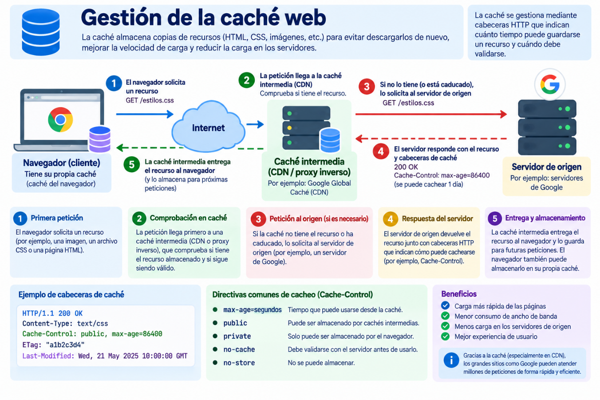
Important: no-cache does not mean “do not store”; that is no-store.
4.5. CORS: cross-origin access
CORS lets a server state which other origins may read its responses in a browser. The server publishes the policy through HTTP headers and the browser enforces it. Same-origin policy prevents a malicious page from freely reading another site's authenticated data.
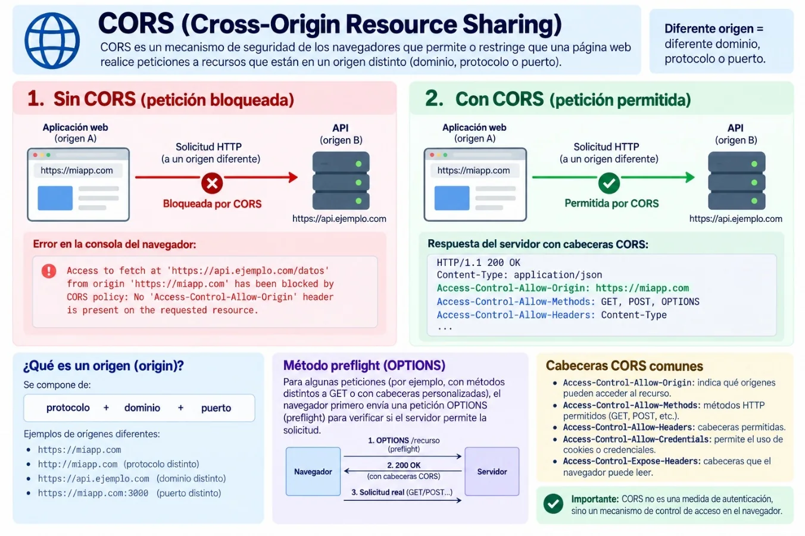
4.6. User-Agent
A user agent is the program initiating a request: browser, application, command-line tool, library or robot. The User-Agent header describes the software, not the person.
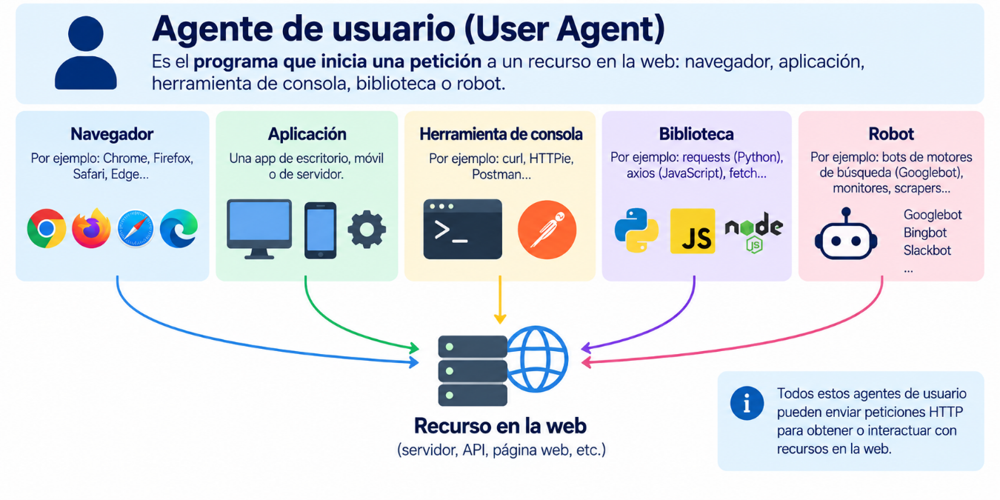
Anatomy of a browser string
Mozilla/5.0 (Windows NT 10.0; Win64; x64)
AppleWebKit/537.36 (KHTML, like Gecko)
Chrome/140.0.0.0 Safari/537.36Historical compatibility tokens make isolated word matching unreliable. Chrome uses Blink even though its string contains AppleWebKit, and other Chromium browsers may also contain Chrome.